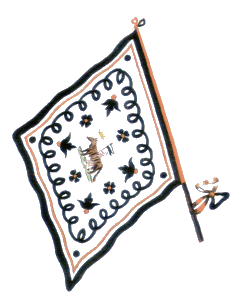

CAPITANI VITTORIOSI:
1 Francesco Valenti
1 Alessandro Amidei
1 Giuseppe Gabbrielli
1 Angiolo Barbarulli
1 Giuseppe Donnini
1 Ferdinando Luzzi
1 Il Seggio
1 Cesare Bicci
1 Luigi Paolucci
1 Fortunato Guiggiani
1 Vitaliano Barbarulli


- IN GRASSETTO QUANDO VINSE
- * CAPITANO ANCHE NEL NOVECENTO